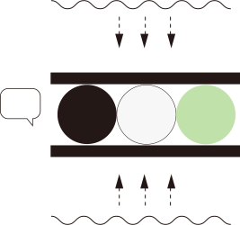
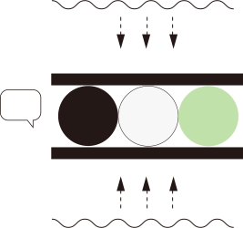

能源議題，
你了解多少？
請問台灣電力主要來源為？
請問 2025 年時，
台灣預計的電力
主要來源為？
都答完了嗎？顯示答案
答：A 燃煤發電 / B 燃氣發電
 

能源轉型議題
in TAIWAN
台灣的能源轉型怎麼走？
一起來討論！
歡迎加入一場數位民主的實驗。
在這裡，我們共同營造知情理性的網路公共平台，鼓勵彼此聆聽、溝通對話，以及系統性思考。在這裡，我們追求的不是流量與聲量，不用大聲對立，而是試圖理解彼此的想法，共同探尋社會願景。同時，我們訂定了良善的討論規則，避免人身攻擊的言論。
能源轉型是台灣重要的社會轉型！歡迎您一起參與青平台基金會的數位民主實驗，讓我們一起凝聚能源轉型的願景，一起討論台灣社會能源轉型的大未來！
實驗怎麼進行？
請先閱讀以下台灣能源結構與轉型計畫介紹，以及step1. 的必備知識，之後再進入step2. 的討論。
我們將討論設計為 3 階段，依序制定討論目標，並穿插 2 次「專家會議」收攏網路討論之內容，並進一步凝聚具體願景：
第 1 階段：資料整合
初步盤點並整理相關資料
第 2 階段：問題與挑戰
聚焦現狀後進行問題討論
專家會議 I ：問題
具體分析第2階段的問題
第 3 階段：未來想像
針對前項問題提出想像
專家會議 II ：願景
討論並凝聚具體願景
台灣的能源結構與轉型計畫
沒有任何一種能源是萬能的，所以，通常一個國家不會只採單一發電方式，而是多種能源相互搭配，截長補短。同時，各國也會從能源安全、能源成本、產業發展、環境影響等等不同面向，規劃建置其能源結構。
也就是說，能源的選擇，往往是依據社會、政治、經濟、技術和環境等複合考量下的選擇。例如，核電的發展與冷戰時代的核軍備競賽有關，從而獲得政治支持。
能源結構也會隨著時空背景與面臨到的不同問題，而漸進持續改變。例如綠能在發展初期可能在成本的競爭力較差，但因應氣候變遷與環境污染的議題越來越被重視，綠能開發仍是許多國家在能源轉型上重要的政策。而隨著更多國家投入綠能，市場規模擴大，技術越來越進步，也得以使成本下降，綠能在全世界能源結構中的佔比亦正在逐步提升。由於綠能有其間歇性，電網的彈性和調度能力也成為各國追求的新目標。
2020 年，在台灣發電方式的佔比中，燃氣佔 35.7%，燃煤佔 45.02%，核能佔 11.24%，再生能源佔 5.4%。再生能源中，太陽光電佔 2.18%，風電佔 0.82%。這個多元並行的能源結構，顯示台灣正處於能源轉型的過程中。
台灣的能源約 98% 都是進口，為了降低對外依賴，我們開始妥善運用台灣因地理環境帶來的豐沛風力和太陽能資源。此外，也需確保足夠的綠電供應，以協助本土企業回應國際上的碳中和要求，以及未來可能課徵的碳關稅。同時，在原有的發電方式中，核能的未知風險、核廢料的處置也是多年懸而未決的問題，燃煤所帶來的空汙問題與碳排放的管理也有其爭議。因此，綜合以上考量，台灣目前能源轉型方向為「展綠、增氣、減煤、非核」。
台灣正以離岸風電與太陽光電為主力，逐步提升台灣能源中綠能的佔比；同時增加燃氣的機組，並把排碳、空污較高的燃煤機組轉為備用或是除役。核能部分，日本 2011 年發生福島事故後，台灣社會廣泛關注核能安全問題，且核廢料處置場選址問題未解，2014 年行政院宣布核四廠封存，核一廠、核二廠、核三廠則將在機組運轉執照到期之後穩健除役，預計2025年達成「非核家園」目標。

2025 年時，台灣的發電方式佔比將成為：燃氣佔比 50%、燃煤佔比 27%、綠能佔比 20%，核能則至 2025 年完全除役歸零。
點我看更多具體策略
為推動能源轉型並兼顧國際減碳承諾，立法院於 2015 年 7 月三讀通過《溫室氣體減量及管理法》，設定減量目標為：2050年溫室氣體排放量降低至 2005 年溫室氣體排放量的 50% 以下。政府於 2016 年啟動「展綠、增氣、減煤、非核」的能源轉型大方向，行政院並於 2017 年 4 月核定「能源發展綱領」修正案，揭示：能源安全、綠色經濟、環境永續、社會公平四大面向的施政主架構，以此作為能源轉型依據並展開全國能源對話，草擬「能源轉型白皮書」。「能源發展綱領」中明訂各部門配合能源轉型相關政策計畫、準則及行動方案訂定的政策方針，全面推動創能、節能、儲能及智慧系統整合與電業改革等面向之政策措施。
行政院於 2020 年 11 月核定「能源轉型白皮書」，內容包含五大方向的重點推動方案，包括：促成能源轉型的公民參與、提升能源使用效率、電力結構革新、加速導入再生能源、促進綠能產業科技發展。為達到此目標，政府持續推動能源價格合理化、相關污染防制費用徵收，並於政策與計畫的評估程序中逐步導入外部成本概念；未來也將檢討化石燃料補貼、綠色稅制或其他政策工具。
為呼應世界趨勢，並努力延緩地球暖化，蔡英文總統於 2021 年宣示，開始評估及規劃台灣在 2050 年達到淨零碳排目標的路徑，從產業、環境、政府治理、國家安全等角度，全盤規劃如何因應氣候變遷挑戰。洪申翰等立法委員，也於 2021 年提出將《溫室氣體減量及管理法》修正為「氣候變遷行動法」的修正草案，將溫室氣體減量目標修正為 2050 年溫室氣體「淨零排放」，並立定多項因應氣候變遷的具體策略。
延伸閱讀
迎向世界——國際減碳趨勢
聯合國 IPCC（政府間氣候變化專門委員會）於《全球升溫 1.5 度特別報告》中指出，若要控制全球暖化升溫幅度不超過 1.5 度，2030 全球溫室氣體排放量要比 2010 年降低 40% 至 50% 。目前已有超過 130 個國家宣示，將往 2050 年溫室氣體或二氧化碳「淨零排放」的目標努力，台灣也是其中之一。
step1. 必備知識
這些參考資料能夠協助各位擁有充分的判斷基礎，
在議題討論的過程中獲得更順暢的交流體驗。
-
能源治理能源轉型 電力系統 儲能 用電管理 公民電廠
-
發電方式天然氣 燃煤 太陽能 風能 核能 其他可能
-
國際趨勢國際減碳趨勢 德國 日本 韓國 台灣
能源轉型
能源轉型不只是發電方式轉型
從電廠發電（供應端）到家戶或工廠用電（需求端），不單只是幾條電線連結起來，需要一個完善的治理體系。能源轉型不只是發電方式的改變而已，更是整個治理體系的轉型，其中牽涉輸電力調度能力的提升、儲能科技的導入、需求端管理、以及社會參與等面向的整合與推動。尤其用電管理及節能涉及民生、工業、商業、住宅、運輸等不同部門，更需要系統性的管理策略與措施。
從能源轉型到淨零轉型
能源治理需依照目標的更新，持續轉型與進化。世界主要國家都已宣示、甚至已立法，到2050年要達成溫室氣體或二氧化碳淨零排放，這都會涉及各國能源結構和產業政策。台灣也已著手規劃2050淨零目標的達成路徑。
在2025年「展綠、增氣、減煤、非核」的基礎上，邁向2050年，在電力供給端，台灣必須極大化再生能源供應，並投入其他低碳能源技術開發；在需求端，台灣需要持續落實節能，並加速高耗能產業的轉型，如半導體產業增加綠電使用佔比、水泥業擴大循環經濟應用等。在運輸部門，電動載具的普及也會是邁向淨零碳排的關鍵。
電力系統
電力系統管理
電力系統包含發電、輸配電、終端用電等不同的環節。電力在發電端發出來之後，會先以高壓電的形式輸送到變電所，進行變壓轉換後，再以較低的電壓配送至用電端，讓使用者來使用。
電力系統需要將用電端的需求，與發電端的發電量做搭配。也就是說，用多少電，就得比用電多發一些電，差距不能太大，電力系統才能穩定供應。因此，除了調度發電端之外，台電公司會隨時監控電力系統的頻率、電壓與電流，並隨時調節發電、輸電、變電設備，才能讓電力系統穩定運作。
台電會依據相關的規劃以調度當天的電力，若是電力預測用量過高，除了改善發電端外，台電可以透過「需量反應」減少用電，或是請民間電廠多發電，以避免發生缺電的狀況。
台電公司會計算每年的備用容量，以及每日的備轉容量，作為調度發電機組的依據。「備用容量」，是計算當年各個發電機組正常發電情況下可以提供的最大發電容量，並預測當年最高小時用電量，以此兩個數據計算出備用容量。「備轉容量」，則是扣除當天正在歲修、維護的機組發電量，並預測當天最高小時用電量，計算出當天的發電量可超出所預測的用電量多少。備轉容量若是太低，則出意外的時候容易發生缺電狀況；若是太高，則會花費不必要的預算。
電力調度
由於再生能源有其間歇性，需搭配一個更靈活、彈性的管理系統。目前台灣正在進行輸配電自動化、變電所智慧化、建置智慧電錶系統等，收集更多電網數據，並以大數據分析及智慧化配電管理，提升供電的可靠度，強化運轉調度品質。
為了增強電力調度能力，透過數位技術調度不同類型電力供應尖峰用電需求，或進行需求端管理的「虛擬電廠」，也是一個具有潛力的發展趨勢。
儲能
目前，台灣所使用的儲能方案包含抽蓄電廠與電池。
抽蓄電廠會在非尖峰時間，將水抽到地勢較高處；當需要用電時，再把水放出來，推動發電機進行發電。
電池是另一個反應更快速的儲能方式，可在啟動後數秒之內為電網提供電力。不過，電池儲能目前的成本較高。
氫能是未來儲能的熱能選項，許多國家都已經投入資源進行研發。
由於未來再生能源在電力結構中的佔比會提升，各類型的儲能系統是重要的電網配套措施，也是各國公私部門投入資源研發的重點之一。
用電管理
節能
節能是用電管理的重要環節。節能分為住商部分的節能，以及工業用電的節能。
住商部分，目前有「住商共推縣市節能行動」，包含補助更換更為節能的電器，推動智慧電錶，讓住商用戶更了解自己的用電結構，進而能夠進一步節電。
在工業部分，包含推動能源密集產業轉型，進行製程改善或汰舊換新，並協助建置能源管理系統等等，協助工業部門更有效率地用電。
需量反應
當我們預測某一段時間用電需求將會增加時，可以透過增加發電來解決，也可以透過管理用電來解決。需量反應就是一種管理用電的方式，是指透過時間電價等等措施，鼓勵用戶在用電尖峰時自主節電，減少尖峰時的電力負載。
目前台電已有「需量競價」政策，可以在前一天先預測可能的電力負載，並開放用電大戶競價。得標者要在尖峰時段進行節電，台電會依據節電多寡提供電費補助。
公民電廠
公民電廠，是以公民為主體，透過合作社等相關組織，集體出資或以勞力、物資的方式，取得電廠的所有權，參與營運，並共享綠電收益的電廠。依據在地的狀況不同，有的公民電廠會採取光電的方式發電，有些會採生質能發電，也可能搭配陸域風機發電。公民電廠的重點，在於讓公民不再只是能源的消費者，也能在周全的討論後，一起成為能源的供應者，參與能源轉型的進程。
天然氣
燃氣是目前台灣主要的發電方式之一，2020 年台灣發電佔比 35.7%，未來到 2025 年預計增加至 50%。燃氣發電機制主要為透過燃燒天然氣帶動燃氣渦輪，再以燃燒出來的溫度帶動蒸汽渦輪，以「複循環」的方式進行發電。
天然氣發電有幾個優點：
- 天然氣機組暖機快，在數小時內，天然氣機組就可以開始供電，可彈性補足再生能源變動較大的缺點。
- 天然氣污染低，天然氣主要成份是甲烷、乙烷等，不會含有太多其他的物質，因此燒出來多也是二氧化碳與水蒸氣，造成的空污狀況不會太多。
- 天然氣是氣體，燃燒時採用「複循環」的方式，除了蒸汽渦輪之外，天然氣的燃燒也可直接帶動燃氣渦輪發電，增加發電效率，進而減少每度電的排碳。
但同時，天然氣也有缺點：
-
天然氣的單位儲存能量低。天然氣平常以低溫液態的形態儲存，和成為固態的煤炭相比，分子中間有更多縫隙，體積會比較大；因此，單位體積能產生的電會比較少。
目前天然氣的裝卸需要靠接收站來接收，因此中斷的可能性包括進口中斷（約需要 6~7 天緊急調度）、天候影響（如颱風等，可能影響 6~7 天），考量以上因素，天然氣每日最低存量應該要有 14 天。目前韓國訂定 12 天，日本 14 天，是相類似的狀況。2020 年時，台灣的安全存量都達到 10 天。
-
台灣目前天然氣接收站有限，目前只有台中和永安兩個接收站，這兩個接收站都已經滿載。為了增加使用效率，目前已經開始改用大船載運天然氣（從 6 萬噸提高到 8 萬噸），增加船次調度等方式，盡可能輸入多一點天然氣。
但是，台灣接下來還會有更多使用天然氣的電廠，因此勢必要增加接收站，尤其是北部的接收站。新接收站的設置也引發台灣社會的關心與討論。
第三接收站議題
天然氣的運送，是由載運液態天然氣的油輪，透過接收站，把天然氣輸送到陸地上的儲存槽，再轉送到各個發電廠儲存。
目前台灣的天然氣接收站有兩個，一個是台中的接收站，另一個是在興達港的永安接收站。
這兩個接收站量能都已經滿了，但台灣需要更多天然氣來發電，自然也需要更多的天然氣接收站。尤其，北部目前沒有接收站，許多天然氣要透過管線北送，這些管線都有風險；若是接收站故障，就更麻煩。
台中接收站目前有擴充的計畫，目前每年可以輸入 600 萬噸，未來 2023 年完成第二席碼頭，可以增加至 800 萬噸，2025 年完成三期碼頭，輸入就可以達到 1000 萬噸。
目前有幾個可能的接收站，如台中港接收站、協和接收站（台北港），但這兩個還在規劃中，要建好需要不短的時間；另一個比較可能近期完成的，是第三接收站，也就是大潭接收站。
第三接收站爭議
珍愛桃園藻礁聯盟認為，桃園藻礁地形向海延伸至少五公里，因此認為三接方案在藻礁區域內。不過經濟部則指出，根據在觀塘工業港水深超過 10 公尺的區域進行水下攝影的結果，海床都被砂石覆蓋，沒有看到藻礁。
經濟部指出，2015 年的第三接收站開發方案面積達 232 公頃，但後來為了避開 G1、G2 區的藻礁，於 2018 年 1 月提出替代方案，將開發面積縮減為 37 公頃；2018 年 8 月底提出的「迴避替代修正方案」，則進一步將開發面積減至 23 公頃，僅使用 2003 年已開發填地區域，並以友善工法盡可能維持藻礁與潮間帶的生態。
對此，珍愛桃園藻礁聯盟認為，三接由工業區與工業港組成，工業港將新增填海造地 21 公頃，還會設置碼頭、防波堤、浚挖航道及迴船池等，會影響延伸至海五公里範圍內的藻礁；也有學者認為，三接工程會帶來凸堤效應，淤積的泥沙可能會導致藻礁死亡。
珍愛桃園藻礁聯盟提出可開發台北港替代三接，因台北港附近有許多閒置土地，未來也可以成為北部天然氣供應樞紐，台北港成本也比觀塘三接省約 70 億元。不過，經濟部指出，台北港方案需要三年的可行性評估、環評，再來需要四年填海造地，興建相關設施也要四年，總計需要 11 年，無法補上核二的 1 號機、2 號機以及協和的火力發電廠陸續退場所造成的電力缺口，更影響能源轉型的進程；同時，台北港需接管至大潭發電廠才能供應所需燃氣。若採陸管方案，中間會經過不少人口稠密區；海管則可能需評估經過的海下環境，這也需要另外考量。
2021 年 5 月 3 日時，經濟部推出再外推 455 公尺之新方案，經濟部認為此方案不必浚挖航道，也就不破壞水下礁體，並同時保留潮間帶藻礁，此作法兼顧保護藻礁及能源轉型目標。此方案得到如地球公民基金會、綠色公民行動聯盟等團體及前環保副署長詹順貴等人之支持。但珍愛桃園藻礁聯盟認為，海岸生態是一體的，認為新方案仍會影響藻礁生態。
燃煤
燃煤是目前台灣主要的發電方式之一，2020 年台灣發電佔比 45.02%，未來到 2025 年預計減少至 27%。燃煤發電機制為透過燃燒煤炭，帶動蒸汽渦輪進而發電。
燃煤電廠的相關優缺點如下：
優點：
- 煤炭是固體，煤炭內部可燃燒的成份更高，單位體積可以發電的電量比較高。
- 比起天然氣，煤炭較便宜。每度電發電所需的煤炭與天然氣，在未考慮其他成本與代價的比較之下，天然氣的價格貴了約兩倍。
缺點：
- 煤炭比較容易造成空氣污染，裡面含有較多有問題的物質，比如硫化物，燃燒之後容易造成空氣污染。燃煤空污的改善方案如下：
- 燃燒溫度較低時容易出現有毒物質，若是提昇燃燒溫度，就有機會能完全燃燒，或避免較為複雜的有毒物質（如戴奧辛）出現。因此，有個作法是提昇燃燒溫度，稱為超超臨界，是一種「潔淨燃煤技術」，已應用在林口及大林發電廠。
- 排放空氣可以經過處理，以過濾有毒或污染物質。處理方式包括水洗、過濾、選擇性觸媒或靜電吸付的方式，將污染物從空氣中過濾掉。
- 燃煤的排碳量較天然氣為高，許多國家都會先以燃氣取代燃煤，減少排碳。燃煤可以搭配碳捕捉的設備（CCS），減少排碳。不過，由於固碳設備需要消耗電力，而電力又要燃燒更多煤炭，恐怕會使排放的空污增加。
- 煤炭燃燒不如天然氣快速，大約以 6 小時為單位，方可達到可以發電的程度。
目前，台灣的燃煤機組正在全面裝設空污的防治設備，未來也不再新建燃煤機組，過往的燃煤機組將逐步除役或是轉為備用。
太陽能
2020 年，台灣太陽光電發電佔比約 2.18%。太陽光電大致可分為兩大類：裝置於學校、工廠、禽舍及住家上的「屋頂型」太陽光電，以及優先架設在地層下陷區、魚塭、廢鹽田、掩埋場及水庫等等的「地面型」太陽光電。
近期政府大力推動太陽光電的設置，長期設置目標為 2025 年達成 20 GW，其中屋頂型要達到 3 GW，地面型達到 17 GW，會多鼓勵利用廠房屋頂，或是農業建築、漁業等場域蓋設太陽光電。
許多人對於太陽能的疑慮在於可能有毒，事實上太陽能製作過程如同手機一樣，有些材料製造過程確實會產生有毒的廢酸，但目前製程已有大幅改善。從半導體的經驗來看，製程相關產物或廢棄物是可被資源化再利用，環境危害可被控制；而太陽能板的矽晶片全部被玻璃等材料包覆，發電過程中不會釋出化學物質，在下雨的時候，也不會沖刷出有毒物質。
不過，近期地面型光電頻頻引發爭議。地球公民基金會分析，背後有「環境面、社會面、行政面」的三大困境。在環境面方面，許多保育團體與居民擔心若是選址不當，大面積改變地貌，會縮限野生動物棲息與覓食的空間，衝擊生態環境。社會面方面，光電廠商的尋地進駐造成魚塭與農地土地租金提高，許多漁民也擔心光電設置後的維護是否會影響養殖操作與產量。在行政面，各個行政機關也須釐清權責加強協調合作。
地球公民基金會等 NGO 建議，政府應該規劃「環境與社會檢核」的方式，在地面型光電的電業籌設階段、施工許可階段及核發電業執照階段篩選出適當區位地點與設計施工方式。
風能
2020 年，台灣風力發電佔比約 0.82%。風電可分為陸域或是離岸風電。陸域是最低成本的類型，但是由於台灣陸地土地取得不易；同時，由於地狹人稠，風機旁邊住人容易受到噪音干擾，有鄰避效應，因此陸域風電在台灣的發展有限制。反過來說，由於海洋空間較為寬闊，也不容易與人類活動產生影響，目前離岸風電是對台灣比較好的選擇，可以生產大規模再生能源電力，成為未來台灣綠電供應的主力。
離岸風電的發展相當快速，發電規模也不斷成長，成本隨著科技和規模的進展一直在下降。離岸風電在其最早發展的歐洲地區，已經比燃煤和核能等傳統發電方式便宜。
目前離岸風電比較大的衝擊在於對生態與漁業活動的影響，不過只要選擇較無生態衝擊，也較不影響漁業活動的場址，搭配較不影響生態的工法，就可以降低相關的衝擊；同時，風機中間也會預留鳥類通過的廊道，減少對鳥類生態的影響。
由於台灣區域有較多的颱風，有些人擔憂風機可能被颱風吹壞。目前針對風機的結構已有制定標準，結構上可抵抗颱風；由於風機為投資廠商的資產，損壞就得花錢維修，因此廠商也不會安裝容易損壞的風機，以免收益受損。
不過，在台灣，離岸風電的發展也遇到一些挑戰。其一是風場與漁業場域重疊，需要溝通出共存共榮的方法，並建立海洋空間使用秩序；再者，離岸風電開發商都是外商，政府雖有制定離岸風電產業國產化的目標，但在國產化的部份項目裡面，台灣廠商需要較長的學習曲線，引起台灣究竟只是需要綠電，抑或要建立整個綠電產業的討論。
核能
2020 年台灣發電佔比中，核能佔比 11.24%。不過，由於台灣核電廠年限陸續到期，以及部分放置高階核廢料的燃料池逐漸放滿，核電廠將陸續除役，至 2025 年預計佔比為 0。
核能發電的燃料是鈾 235。鈾 235 要從鈾礦開採，經過濃縮與提煉後，製成含 3%鈾 235 的燃料棒。把這些燃料棒放入反應爐中，透過中子撞擊鈾 235，引發核裂變，進而產生熱能，再用熱能來發電。依據傳遞熱能的方式，可分為沸水式反應爐與壓水式反應爐。在核裂變發生後，會產生兩個較小的原子核，這個原子核就會成為發出輻射的核廢料。
核能發電不用經常更換燃料，只需每 18 個月更換 ⅓ 的燃料棒，因此一組燃料棒的使用時間可以長達數年。這使得它的發電相較之下比較穩定，不受天候影響。
核能發電的優點是發電過程不會產生排碳跟其他類似火力發電排放的有害廢氣，在減排碳的目的上有其優點；但依據不同的計算方式，比如從鈾礦開始開採計算，也有研究指出核能的排碳比預估的為高。由於核能從製作過程到最後廢棄物處理都容易有輻射污染，全球主要的國際組織對於核能，多以「低碳能源」/「潔淨能源」稱之，但不會稱為綠能（Green Energy）或永續能源（Sustainable Energy）。
核廢料分為低階核廢料與高階核廢料。目前低階核廢料放置於蘭嶼及桃園核研所，以及各電廠廠區內。當時設計規劃時，原本預計可以海拋這些低階核廢料，但在 1996 年的倫敦公約禁止將核廢料海拋之後，這些核廢料必須找到長期的貯存場所。台灣曾經經過多次的選址，希望能夠找到永久貯存的地方，但是由於選址過程中不是遭到居民抗議、就是地方政府不願意舉辦選址條例的法定公投等等原因，造成至今台灣仍找不到永久貯存低階核廢料的地方。
高階核廢料主要為核電廠用過的燃料棒，這些燃料棒要先放在廠房內的燃料池，利用水循環減少發出的熱量，經過五到八年溫度降低之後，才能移出到乾貯設施暫存，不過，由於乾貯設施沒有得到地方政府的許可執照，因此許多高階核廢料只能存放在燃料池中，目前核一、核二的燃料池已經逐漸放滿了，目前找不到其他的處理方式，更遑論高階核廢料的「最終貯存」。
國際間一般認為，這些高階核廢料的最終貯存場應放至於岩盤穩固、不會滲水的地底深處，以免輻射外洩造成問題。不過目前僅有芬蘭與瑞典有營運這樣的最終貯存場，台灣的地質條件應該很難有這樣的地方可以作為最終貯存場。
核能電廠的安全問題則是另一個大問題。與其他電廠相較，核電廠周遭一旦遭遇到地震、海嘯或是火山爆發這類高危險性複合式天災的時候，冷卻系統有可能受到損壞而發生核災，將會使得大量土地遭到輻射汙染而不適合人類繼續居住。除此之外，前蘇聯車諾堡與美國三哩島嚴重的核子事故，卻是人為操作失誤。福島核電廠發生事故時，居民的避難範圍達 20 公里，目前行政院原子能委員會規畫的「緊急應變計畫區」只有 8 公里，撤退緩衝時間是 2~4 小時，但以日本福島事故疏散半徑 20 公里內之聚落來看，若核一、核二廠疏散範圍擴大到 20 公里，將涵蓋半個臺北市。大台北地區是都會盆地，恐怕難以「畫半徑」。
另外，核電從啟動到接上電網，需要三至五天的時間，到滿載還需要額外四天，與燃煤、燃氣相較，彈性較低。如遇跳機，安全檢查無虞後，重新啟動併聯升載的時間需要較長，應變與調度困難度較高，不符合現今電網強調彈性和應變能力的需求。
核一廠：
核一廠目前兩部機用過的燃料池都已經滿了，1 號機與 2 號機的執照都過期，已經進入除役階段，2 號機停機中，已經通過環評開始進入實質除役。乾貯設施方面只完工第一期露天的乾貯，但是新北市政府不支持啟用。
核二廠：
核二廠兩部機組安全運轉中，但 1 號機的燃料池要滿了，滿了以後反應爐就無法填充新燃料。2 號機目前可以運轉至燃料屆期，不過核二廠的乾貯設施新北市不支持無法動工。目前核二廠的除役計畫已經經原能會審查通過，等環評通過後就可開始除役。
核三廠：
目前核三廠兩部機組安全運轉中，可以運轉到執照屆期，用過的燃料池空間充足，目前正在辦理福島安全強化工程，包含成立海嘯總體檢專案小組、檢討各核電廠用過燃料池冷卻功能、強化各核電廠的耐震能力、加強緊急發電機的可靠度等等，預計將會花掉 300 億做相關的強化。由於核三廠預計於 2025 年除役，依據核子反應器設施管制法，必須於前 5~15 年申請延役；由於已經超過期限，目前依法核三廠已經無法申請延役。在除役方面，核三廠剛剛進入除役的環評二階，除役計畫還沒送原能會審查。
核四廠：
核四廠與之前三廠不同。之前的核能電廠是採統包（turn-key）建廠，由美國核能公司及工程顧問公司（顧問公司）負責整廠設計、設備採購、施工督導、試運轉測試及至滿載運轉，全程負責；核四廠的時候，把核電廠的顧問、反應爐、發電機、機電工程、土木工程，採分包招標的方式進行，因此在設計、施工、整合、工地管理、測試，出現了不少問題，時間延宕以及工序紊亂，很多設備零件已過保固期，甚至有裝備拔來拔去的狀況；有些設計的規格與製作的規格不符，出現了許多工程問題，導致延宕。
而且，核四興建過程中多次停建、封存，連原本設計團隊都已經解散找不回來，內部的控制系統經過20年也已經過時，控制系統的公司也早已破產。若要運轉，估計需要花上許多年的時間處理先期問題，處理後，最快也要 6~7 年才可開始運轉。2014 年 4月，時任行政院長江宜樺宣布核四封存。
核四所規劃能發電之瓦數為270萬千瓦，相較之下，興達電廠新燃氣機組就可達到 390 萬千瓦。
福島事故
2011 年 3 月 11 日下午 2 點 46 分，日本東北地方外海發生規模為 9.0 的地震。當時福島第一核電廠的 4-6 號機停機處於定期安全檢查狀態，1-3 號機正在運轉，地震後反應爐自動停止。地震引發電廠的電源故障，導致機組失去外部供電，因此啟動了應急柴油發電機。地震發生約 50 分鐘後，最高高度約為 13 公尺高的海嘯襲擊了核電廠，地下室的應急柴油發電機因為遭到淹沒而停止運轉，電器、水泵、燃料罐、緊急電池等大部分設備受損或被水沖走，導致核電廠陷入全廠停電，水泵無法向爐心和用過燃料池注入冷卻水，無法帶走燃料棒的熱量，導致爐心開始空燒，當溫度超過 2000 度後，燃料棒就會因為過熱而融化。
在 1-3 號機中，由於燃料棒護套融化，導致燃料顆粒落到反應爐壓力槽底部。這些燃料溫度極高，熔穿壓力槽底部，落入反應爐安全殼，造成爐心熔毀。同時，由於壓力槽內壓力增加，水位降低，暴露出水面的核燃料氧化鈾溫度過熱，燃料棒護套的鋯合金與水蒸氣發生催化反應而產生氫氣。水蒸氣和氫氣導致壓力急遽升高，部分安全殼損壞，熔毀的爐心釋出大量氫氣，聚集在反應爐、氣輪機廠房內，導致 1、3、4 號機發生了氫氣爆炸，廠房和周圍的設施嚴重損壞。
根據東京電力的推算，此次事故共外洩大約 90 萬兆 Bq 的鈾元素和碘-131、鎘-137 和鈽-134。根據法國放射線防護與核安全研究所（Institut de radioprotection et de sûreté nucléaire）於 2011 年 10 月發表的報告，從 3 月 21 日至 7 月中期，大約有 27 PBq 銫-137 釋入大海，大多數（82%）是在 4 月 8 日前釋入大海。另外，則有輻射塵被帶到內陸地區，通過飯館村、伊達市、福島市、郡山市等地，降雨或降雪之後就沉積在土壤，因而造成長期性的汙染。
事件發生後，日本政府將福島第一核電廠周圍 20 km圈內的地區作為警戒區域，圈外放射線量高的地區作為「計劃中的避難區域」，共計約 10 萬居民撤離。到 2012 年 4 月時，日本政府重新指定了整年累積劑量 20 毫西弗以下地區為「避難指示解除準備區」，可行車經過、居民短暫返家或恢復重新營業；整年累積劑量有可能超過 20 毫西弗地區為「居住限制區」，除了行車、居民短暫返家與基礎設施重建可進入本區，非必要不要進入；目前之整年累積劑量超過 50 毫西弗地區為「返回困難區」，要求徹底疏散避難，僅能臨時進入。
不過，日本分級區域的標準遭受了不少批判。有人認為，未滿 20 毫西弗/年，是國際放射防護委員會針對「緊急狀況」所建議的基準，根據日本的「核原料物質、核燃料物質及び原子炉の規制に関する法律」，人為造成之輻射年劑量不得超過 1 毫西弗，分級區域的標準明顯違反這部法律規定；且當地實際測得的劑量仍較災前的東京高。很多居民因為擔心輻射所造成的影響，自行在外避難。在日本的避難指示解除後，這些自行在外避難者就成為「自主避難者」，失去難民身分，也無法取得賠償與住宅，有許多自主避難者陷入生活上的困難。
除了居民避難外，由於輻射塵造成當地的輻射污染，日本政府也進行刨除表土 5~10 公分的「除汙」工作，預計將移除高達 1400 萬立方公尺的污染物，運送到當地的暫時儲存設施中。不過，綠色和平東亞分部於 2021 年 3 月根據政府公開資料指出，在範圍達 840 平方公里的特別除污地區（SDA）內，僅 15% 區域完成清除輻射，85% 面積沒有啟動清除工作，且未進入森林地帶進行除污，輻射物可能會從森林中飄散至原本的居住區域。另外，核災發生後，福島電廠曾發生輻射污水持續流入海洋的事件。核電廠目前利用 2018 年完工、深入地下 30 公尺、長達 1.5 公里的「冷凍牆」來防堵輻射污水外洩，但污水量卻因下雨及其他冷卻因素而持續增加，成為一大隱憂，2020 年每天平均增加 140 立方公尺污水。2021 年 4 月 13 日，日本政府正式決定在經過處理之後，將約 120 萬噸含氚的核污水稀釋後排入大海，引發周邊國家的抗議。
其他可能
氫能
氫是地球上常見的元素，存在於地球隨處可見的水當中。使用上需要先使用其他能源提取氫，再以液態、高壓氣態或其他方式儲存，再以燃料電池方式使氫能轉為電力，或用以工業製程的高溫燃燒所用。因此，在電力供給過剩時，氫能也可作為一種儲能的形式。不過，將電力轉換為氫的過程仍有能量耗損，需要考慮。
產製氫的過程需要其他能源。如果能源來自於化石工業，搭配碳捕捉技術，可稱為「藍氫」，若來自於風電、太陽光電等綠能，則稱為「綠氫」。氫氣在轉換為電力的過程中較不會造成環境的汙染或是造成嚴重的碳排放，被視為是未來化石燃料的替代品。氫能儲存的優點是可長時間大量儲存再生能源餘電，提高能源供給穩定性；但是，氫氣本身容易爆炸，可再製作成甲烷等較為穩定的氣體進行運送及儲存。
國際減碳趨勢
工業革命後，人類許多經濟活動仰賴化石燃料的燃燒，排放大量二氧化碳，導致全球溫度提高。2015 年，《聯合國氣候變遷綱要公約》第 21 次締約國大會通過《巴黎協定》，承諾致力於追求全球平均升溫幅度不超過 1.5 度。
根據聯合國 IPCC（政府間氣候變化專門委員會）的估算，2018 年時，人類活動導致的全球平均溫度，已經較工業革命之前提高了約 1 度。在《全球升溫 1.5 度特別報告》中，IPCC 指出，升溫 1.5 度時，人類與自然所受到的氣候風險，如海平面上升、極端氣候、生物滅絕等等，將高於現在，但低於升溫 2 度。若要控制升溫幅度不超過 1.5 度，2030 全球溫室氣體排放量要比 2010 年降低 40%~50%，並於 2045-2055 年間達到零排放。電力結構上要達到這樣的目標，2050 年的化石燃料佔比要抑制到 8% 左右，再生能源需大幅成長到77.5%。
不過，IPCC 的規劃納入了可以極速減煤但是風險較高的技術，包括地球工程、碳捕捉及封存、大規模增建核電廠等。德國全球變遷諮詢委員會在 2016 年提出的「Jürgen Schmid情境」能源轉型規劃排除了這些較高風險的技術。根據此規劃，2020 年後，全球應迅速削減煤碳使用，並於 2030 年淘汰；石油則應於 2040-2045 年間逐步完全淘汰。作為過度期間的天然氣，預計在 2035 年前會維持在 20% 以上，直到2050 年時被充分替代。德國全球變遷諮詢委員會建議，核電廠應於 2035 年時全部除役，2050 年時，太陽能與風力佔比將達近 70%。
德國轉型方案
1973 年第一次石油危機後，德國就開始推動能源效率的資訊透明，以及推行各種節能政策；1990 年代開始建立推動再生能源發展的架構，如成立德國全球變遷諮詢委員會（WBGU），提供各種永續發展、碳排放等相關建議，並訂定能源相關法律，推出電力躉購制度（Feed-in Tariff, FIT）。2000 年時，通過第一版的《再生能源法》和《核能汰除法》；2010 年，修正《核能汰除法》，並提出「能源概念」（Energy Concept）。2007 年時，德國依據 IPCC 第四次評估報告之建議，訂定 2020 年相較1990年溫室氣體排放要減量 40% 之目標，並於 2010 年提出能源概念，針對溫室氣體、再生能源、能源效率、建築以及運輸等項目，訂定了國家具體的中長期能源發展目標。
在日本 2011 年福島事故後 3 天，德國總理梅克爾宣布關閉德國境內在 1980 年前所建的 7 座核電廠，並進一步宣布 2022 年將完全停止境內核電廠的運作。於 2015 年 6 月，德國開啟「2050 氣候行動計畫」的社會對話程序，於 2016 年正式由國會通過。這個行動計畫透過隨機抽樣、電話邀請等方式，抽選出可以反應各個地區人口結構的 472 位德國公民參與；程序上從政策說明會議開始，接著在五個城市舉辦公民對話的圓桌會議，最後提出 77 項政策建議，包括標示產品生態足跡、發展高效能儲能系統、重視地方社區的再生能源發電計畫等。2018 年 6 月，德國邀集利害關係人組成「產業成長、結構變革與就業委員會」（Commission on Growth, Structural Change and Employment），討論國家燃煤電廠的除役時程與具體措施。六個月後所提出的報告建議，德國應於 2038 年前，完全停止現行發電占比約 35% 的燃煤發電，並對受影響的地區提供 20 年、總計 400 億的財務支持以協助轉型。
日本轉型方案
日本於 2010 年 6 月提出「第 3 次能源基本計畫」，預計於 2030 年度達成核電比例約 5 成之目標。不過，於 2011 年發生福島事故後，於 2012 年 9 月所提出的「革新的能源環境戰略」中，已將 2030 年的核電佔比降為 0，並要求既有之核電廠運轉 40 年後廢爐、不新建核電廠。
自民黨上台後，於 2012 年 12 月的「第 4 次能源基本計畫」中，稱核電為「重要的基載電」；雖然沒有明文記載要新建核電廠，但是要求推動和燃料循環、核電設備輸出。2015 年 7 月的「長期能源供需展望」中，提出 2030 年的能源結構目標，為核能佔比 20~22%、再生能源佔比 22~24%、燃氣佔比 27%、燃煤 26% 及燃油 3%。在 2018 年 7 月通過的「第五次能源基本計畫」，也提出相同的 2030 能源結構目標。
雖然報告中稱在盡可能降低依賴度的方針下，核能將採取在安全優先下重啟運轉、針對使用過的核燃料採取對策等必要措施，但若要實現 2030 年核電占比 20~22%的目標，必須約有 30 部的核電機組運轉，朝日新聞指出這個目標將十分困難。在使用過核燃料的再處理上，也有停滯不前的問題。朝日新聞也指出，報告中雖然提出再生能源要「主力電源化」的概念，但是在於減少國民負擔方面將是很大的挑戰。
韓國轉型方案
2000 年起，韓國政府開始較積極布局「新能源及再生能源」；但在 2000~2016 年間，韓國政府將核能視為潔淨能源，並大力發展。在此期間，核能成長速度遠超過再生能源發展。2005 年，盧武鉉政府以高經濟補償為誘因，通過慶城地方公投，選定該地為低階核廢料的貯存場址。2008 年，李明博政府推出「低碳綠色成長政策」（Low Carbon Green Growth Policy），核心方針是擴大核電廠發電並出口核電技術，以達成積極減碳的目標，並在 2009 年，與阿拉伯聯合大公國簽訂核電廠輸出協定。
2011 年日本福島發生核災後，大部分西方國家放緩核能發展的腳步，但韓國依然對核能發展保持積極的態度，依然視核能為減碳的主要替代能源，相關政策沒有太多調整。2014 年，朴槿惠政府公布《第二次國家型能源基本計畫（2014-2035）》，其中的政策核心仍是利用最大限度的核能，並認為核能是兼顧環境效益與經濟效益的能源；在 2015 年的《第七次長期電力供需計畫》中，亦規劃持續發展核能與新增燃煤電廠。
不過，福島事故事件之後，韓國境內的反核運動與能源轉型倡議團體擴大了反核運動的各方參與，地方政府也開始積極推動節能、減核政策。首爾市政府帶動的「省下一座核電廠計畫」（One Less Nuclear Power Plant in Seoul）即是其中最知名的案例，此計畫也提供了重要的典範，以利後續公民參與能源政策的決策。但直到 2017 年總統大選，減煤與減核幾乎成了所有候選人能源政見的共同方向，文在寅在政見中提出，韓國應於 2030 年將核電與燃煤分別下降至 18% 和 25%，燃氣與再生能源發電分別提升至 37% 和 20%，並廢除新古里 5、6 號核能反應爐建造。
2017 年，文在寅政府在出席 2017 年 6 月 19 日韓國第一個核反應爐除役典禮時，正式提出「非核宣言」，宣告韓國不會再新建核電廠、取消延役規劃，並逐步汰除燃煤發電廠。同年，針對興建中的「新古里 5、6 號機」，韓國政府舉辦公民會議，選出 500 名公民代表團參與一系列培訓與審議，討論是否繼續興建兩機組的工程，最後提出三項政策建議，包含建議政府續建核電機組、國家的能源政策應走向階段性減核，並建議若要重啟核電機組，應強化核電廠的安全標準，且要擴大新能源及再生能源占比所需之投資，並盡早制定核廢料解決方案。
在 2017 年所提出的《第八次電力長期供需計畫（2017-2031）》和《再生能源 3020》（Renewable Energy 3020）計畫中，韓國預計 2030 年時，再生能源占比將由 2017 年的 6.2% 提升至 20%，核能則由 30% 降至 24%，燃煤發電則由 45% 降至 36%。
台灣轉型方案
2020 年台灣發電方式佔比，燃氣佔 35.7%，燃煤佔 45.02%，核能佔 11.24%，再生能源佔 5.4%。再生能源中，太陽光電佔 2.18%，風電佔 0.82%。這個結構正處於轉型過程中。
由於台灣的能源約 98% 都是進口，為了降低對外依賴，我們必須妥善運用自身豐沛的風力和太陽能資源。此外，也需確保足夠的綠電供應，以協助本土企業因應未來的碳關稅及供應鏈碳中和義務。同時，台灣還需要增強對空氣污染及碳排放的管理；我們也對核能的風險及核廢料的處置有所疑慮。因此，台灣目前能源轉型方向為「展綠、增氣、減煤、非核」。
台灣正以離岸風電及太陽光電為主力，提升綠能的佔比；同時增加燃氣的機組，並把排碳、空污較高的燃煤機組轉為備用或是除役。核能部分，日本 2011 年發生福島事故後，台灣社會廣泛關注核能安全問題，且核廢料處置場選址問題未解，2014 年行政院宣布核四廠封存，核一廠、核二廠、核三廠則將在機組運轉執照到期之後穩健除役，預計2025年達成「非核家園」目標。
預計 2025 年時，達到燃氣佔比 50%、燃煤佔比 27%、綠能佔比 20%，核能則穩健除役，至 2025 年完全除役。
為推動能源轉型並兼顧國際減碳承諾，立法院於 2015 年 7 月三讀通過《溫室氣體減量及管理法》，設定減量目標為2050年溫室氣體排放量降低為 2005 年溫室氣體排放量的 50% 以下。政府於 2016 年啟動「展綠、增氣、減煤、非核」的能源轉型大方向，行政院並於 2017 年 4 月核定「能源發展綱領」修正案，揭示：能源安全、綠色經濟、環境永續、社會公平四大面向的施政主架構，以此作為能源轉型依據。「能源發展綱領」中明訂各部門配合能源轉型相關政策計畫、準則及行動方案訂定的政策方針，全面推動創能、節能、儲能及智慧系統整合與電業改革等面向之政策措施。
為落實「能源發展綱領」，經濟部能源局於 2017 年 5 月起展開全國能源對話，草擬「能源轉型白皮書」，交通轉型、建築節能、產業減碳、綠色金融的相關部會都參與其中，同時導入共同協作及公民參與。第一階段先於北、中、南、東辦理預備會議，徵求民眾對於白皮書討論範疇的想法。第二階段邀請 60 位產官學及民間代表，組成「能源治理、節能、電力、新及再生能源、綠能產業科技」五個工作小組，針對重點方案及計畫共同協作，產出具體內容，並上網徵求意見，完成「能源轉型白皮書」初稿。第三階段展開廣泛公民對話，於 2018 年邀請不同領域對象辦理分眾會議、公民會議及網路意見徵詢，本階段共有550人參與，收集758則意見。各部會彙整相關意見，進行重點推動方案之修正，並交由五大工作小組進一步召開會議定稿。
2020 年 11 月，行政院核定「能源轉型白皮書」，內容包含五大面向、20項重點推動方案。五大面向包括：（一）能源轉型全民推動—促成地方能源治理與公民參與；（二）提升能源使用效率—實現澈底的節能社會；（三）推動電力結構革新—確保系統穩定、供電潔淨為目標；（四）加速導入再生能源—以永續能量為目標；（五）促進綠能產業科技發展—創造綠能就業與技術革新。
「能源轉型白皮書」中明列，2025 年的能源轉型，將以達成再生能源發電量占比 20％ 為目標，並如期如質完成相關能源基礎建設及相關配套措施，以確保電力穩定供應、降低空污及減少碳排放。為了達到此目標，政府將持續推動能源價格合理化、相關污染防制費用徵收，並於政策與計畫的評估程序中逐步導入外部成本概念。未來也會再藉由檢討化石燃料補貼、綠色稅制或其他政策工具，合理有效反映能源使用的內部及外部成本，落實使用者付費原則與污染者負責原則。
在節能路徑上，政府規劃將藉由技術突破與配套措施，使能源密集度與電力密集度分別從 2017 年 2025 年年均改善 2.4% 與 2%。在創能方面，政府則規劃各類再生能源發展目標，2025 年各類再生能源推廣目標為太陽光電 20,000MW、風力發電 6,938MW、生質能 813MW、水力 2,150MW、燃料電池 60MW，並達發電占比 20％ 目標。在儲能及智慧系統整合方面，配合再生能源設置佈建儲能設備，以調度及穩定再生能源發電量及需求，提供系統彈性與備轉容量，並投入區域儲能及滾動檢討儲能需求。另透過推動智慧電網與智慧電表興建，推動更具效益的時間電價及節能措施。
step2. 加入討論
台灣的能源轉型怎麼走？
我們相信透過對話，能夠讓更多人瞭解議題脈絡、
找到問題、畫出共同的願景
一起加入！